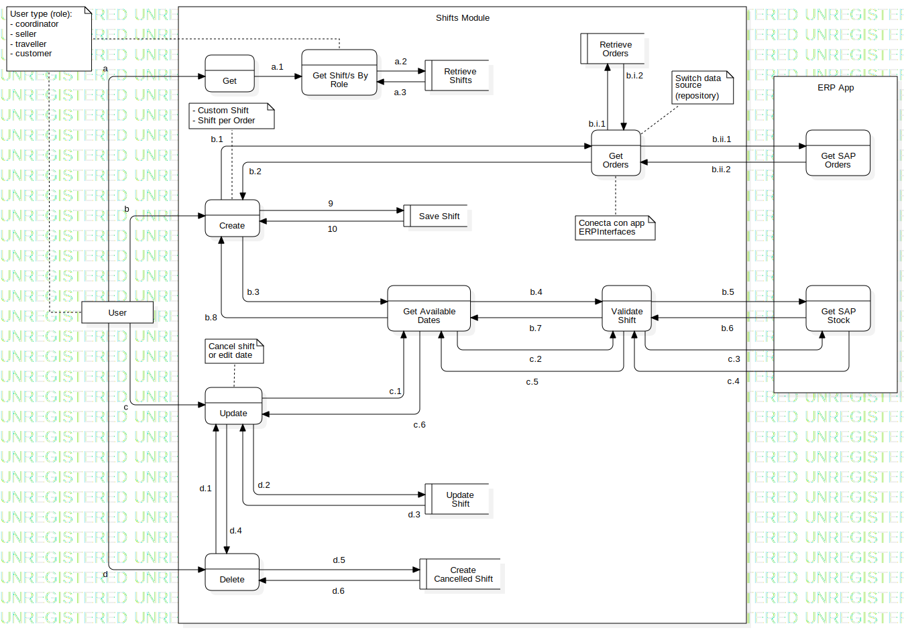

Coordinator
DFDDataFlowModel
Self-management Panel
::
Core
::
Shifts
::
Data Flux Business Logic
::
Coordinator
Description
Lógica del negocio (aplica también para los roles seller, traveller y customer).
Diagrams

DFDDiagram
Properties
Name
Value
name
Coordinator
id
Owned Elements
DFDDiagram
Shifts Module
ERP App
User
Save Shift
Get
Create
Update
Delete
Get Shift/s By Role
Update Shift
Get Available Dates
Retrieve Shifts
Validate Shift
Get Orders
Retrieve Orders
Create Cancelled Shift